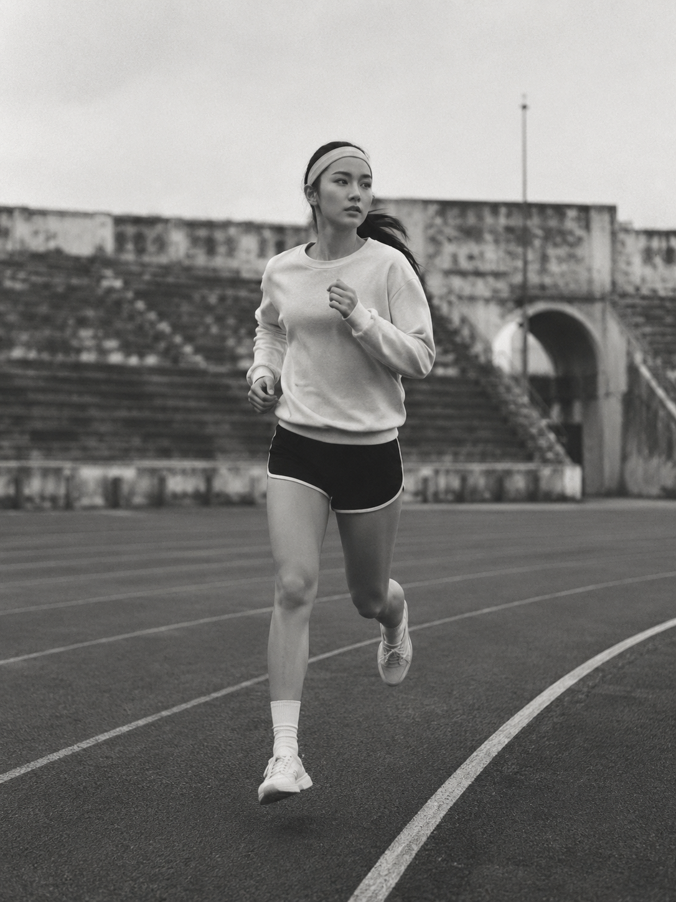

The Meaning of One
VERONE은 Everyone, Ever One, One For All 의 의미를 담고 있습니다.
우리는 단순히 옷을 만드는 것을 넘어, 시간이 지나도 변하지 않는 가치와 사람을 연결하는 통일성을 제안합니다.
유행처럼 빠르게 스쳐가는 것이 아닌, 당신의 아카이브에 가장 오래 남을 클래식 스포츠웨어의 새로운 기준입니다.
01 . Origin
Inspired by
Inspired by
Heritage
1950~1960년대 클래식 스포츠웨어의 황금기. 당시의 거친 숨결이 묻어나는 견고한 원단과 불필요한 장식을 배제한 본질적인 실루엣이 VERONE의 뼈대가 됩니다.


02 . Visual Motifs
Symbols of Direction and Time

Compass 방향성
나침반은 유행에 흔들리지 않고 브랜드가 나아가야 할 명확한 철학적 방향성을 상징합니다.

Clock 시간성
시계는 시간의 흐름 속에서도 고유의 가치를 잃지 않는 아카이브의 영속성을 의미합니다.
03 . Color & Material
Built on Timeless Materials

Primary
Dark Brown
The Weight. 낡은 가죽의 깊이감.

Secondary
Forest Green
The Depth. 깊고 차분한 서브 컬러.

Background
Archive Beige
The Canvas. 카탈로그 종이의 여백.
04 . Signature
Explore All
Signature Pieces

Retro Uniform
Deep Green

Heritage Windbreaker
Archive Beige

Varsity Jacket
Navy / White

Essential Hoodie
Heather Grey
Time Passes.
Values Remain.
One For All.